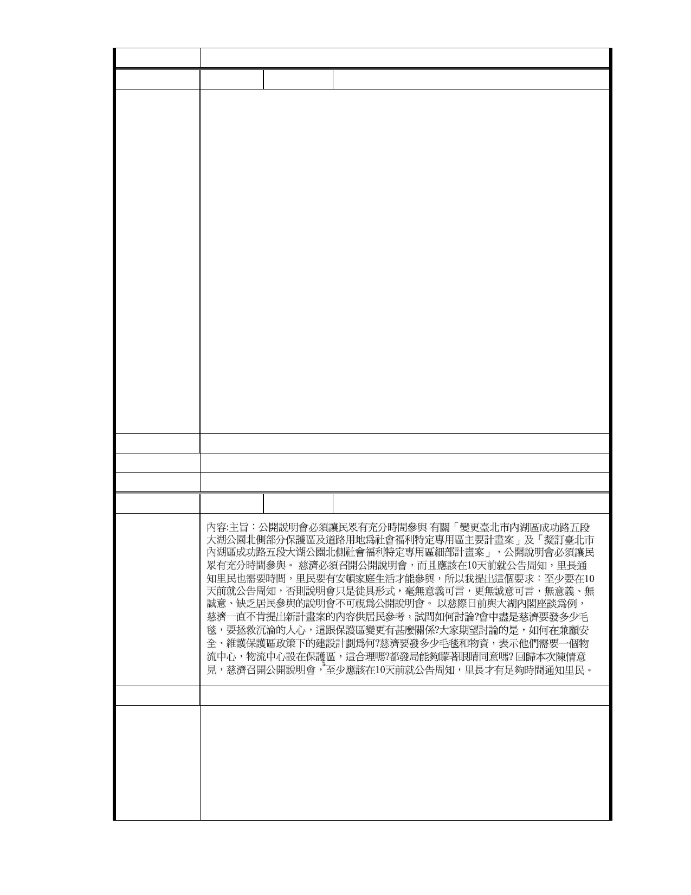

委 員 會 決 議 同編號 1。
編
號 164
陳情人 臺北市內湖保護區守護聯盟
主旨：
有關財團法人慈濟社會福利基金會之「變更臺北市內湖區成功路五段大
湖公園北側部分保護區及道路用地為社會福利特定專用區主要計畫案」
暨「擬訂臺北市內湖區成功路五段大湖公園北側社會福利特定專用區細
部計畫案」，惠請貴局及都委會依法督促該基金會舉辦公開展覽及公開
說明會。
陳情理由
說明：
一、依據都市計畫法第 19 條規定辦理。
二、慈濟團隊於 11 月 25 日下午在內湖區大湖國小召開所謂「溝通會」，
僅召集信眾參加，大湖居民聚集校門外強烈抗議後，才得以入內參與。
三、慈濟營建團隊顧問長豐工程顧問有限公司高宏軒副總於會中發言：
「…都市計畫法第十九條…與原計畫有所落差的時候，一般會要求重辦
公展…上一次公開展覽…距離現在有點過久…也曾經歷經五次都市計畫
審議…上次大會 101 年 637 次大會提報告案…後續在審議過程中，如果
主管機關要求重新公開展覽… 我們會依照規定來重新辦理」云云。
四、為避免激化大湖地區居民對立激化，徒增居民生活壓力，本聯盟屢
次請求都發局本於權責機關之法定職權，督促慈濟內湖園區開發案應重
辦公開展覽，亦可避免都發局慈濟化之疑慮，茲再次請求 貴局依法辦理。
建議辦法
市 府 說 明 相關陳情意見將納入本案審查人民意見，依法定程序辦理。
委 員 會 決 議 同編號 1。
編
號 165
陳情人 洪美惠
陳情理由
建議辦法
市府說明
一、本案申請範圍於慈濟購得前已遭填平破壞作汽車停車場使用，已長
年不具保護區之功能；目前申請方案較先前方案已大幅降低開發強
度、調整使用項目並承諾大面積滯洪設施等回饋事項，顯示申請單
位欲改善現況之誠意。
二、相關陳情意見將納入本案審查人民意見，依法定程序辦理。
三、後續審理程序將要求申請人加強與在地區民、社會大眾，就基地現
- 232 -